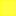

<!doctype html>
<html lang="en">
    <head>
        <meta charset="utf-8">
        <meta http-equiv="X-UA-Compatible" content="IE=edge">
        <meta name="viewport" content="initial-scale=1,user-scalable=no,maximum-scale=1,width=device-width">
        <meta name="mobile-web-app-capable" content="yes">
        <meta name="apple-mobile-web-app-capable" content="yes">
        <link rel="stylesheet" href="css/leaflet.css">
        <link rel="stylesheet" href="css/qgis2web.css"><link rel="stylesheet" href="css/fontawesome-all.min.css">
        <style>
        html, body, #map {
            width: 100%;
            height: 100%;
            padding: 0;
            margin: 0;
        }
        </style>
            <title>Flux artificialisation 2017-2019</title>
    </head>
        <body>
        <logo>
        <div id="logo">
        
        </div>
        </logo>
        <div id="map">
        </div>
        <script src="js/qgis2web_expressions.js"></script>
        <script src="js/leaflet.js"></script>
        <script src="js/leaflet.rotatedMarker.js"></script>
        <script src="js/leaflet.pattern.js"></script>
        <script src="js/leaflet-hash.js"></script>
        <script src="js/Autolinker.min.js"></script>
        <script src="js/rbush.min.js"></script>
        <script src="js/labelgun.min.js"></script>
        <script src="js/labels.js"></script>
        <script src="js/leaflet.wms.js"></script>
        <script src="data/Surfacesartificialisesentre2017et2019_2.js"></script>
        <script src="data/PrimtreGrandCognac_3.js"></script>
        <script>
        var map = L.map('map', {
            zoomControl:true, maxZoom:17, minZoom:4
        }).fitBounds([[45.668325878968744,-0.36331563607735634],[45.7022716407965,-0.28681381878004997]]);
        var hash = new L.Hash(map);
        map.attributionControl.setPrefix('<a href="https://github.com/tomchadwin/qgis2web" target="_blank">qgis2web</a> &middot; <a href="https://leafletjs.com" title="A JS library for interactive maps">Leaflet</a> &middot; <a href="https://qgis.org">QGIS</a>');
        var autolinker = new Autolinker({truncate: {length: 30, location: 'smart'}});
        var bounds_group = new L.featureGroup([]);
        function setBounds() {
        }
        map.createPane('pane_GoogleSatellite_0');
        map.getPane('pane_GoogleSatellite_0').style.zIndex = 400;
        var layer_GoogleSatellite_0 = L.tileLayer('http://mt0.google.com/vt/lyrs=s&hl=en&x={x}&y={y}&z={z}', {
            pane: 'pane_GoogleSatellite_0',
            opacity: 1.0,
            attribution: '',
            minZoom: 4,
            maxZoom: 17,
            minNativeZoom: 0,
            maxNativeZoom: 18
        });
        layer_GoogleSatellite_0;
        map.addLayer(layer_GoogleSatellite_0);
        map.createPane('pane_Surfacesartificialises2019_1');
        map.getPane('pane_Surfacesartificialises2019_1').style.zIndex = 401;
        var layer_Surfacesartificialises2019_1 = L.WMS.layer("https://greencitylab.terranis.fr/geoserver/wms", "mtd:cognac_2019_masque_surfaces_artificielles_dissolve_clean", {
            pane: 'pane_Surfacesartificialises2019_1',
            format: 'image/png',
            uppercase: true,
            transparent: true,
            continuousWorld : true,
            tiled: true,
            info_format: 'text/html',
            opacity: 1,
            identify: false,
            attribution: '',
        });
        map.addLayer(layer_Surfacesartificialises2019_1);
        function pop_Surfacesartificialisesentre2017et2019_2(feature, layer) {
            var popupContent = '<table>\
                    <tr>\
                        <td colspan="2">' + (feature.properties['change'] !== null ? autolinker.link(feature.properties['change'].toLocaleString()) : '') + '</td>\
                    </tr>\
                    <tr>\
                        <td colspan="2">' + (feature.properties['zone_urb'] !== null ? autolinker.link(feature.properties['zone_urb'].toLocaleString()) : '') + '</td>\
                    </tr>\
                    <tr>\
                        <td colspan="2">' + (feature.properties['area_chgt'] !== null ? autolinker.link(feature.properties['area_chgt'].toLocaleString()) : '') + '</td>\
                    </tr>\
                </table>';
            layer.bindPopup(popupContent, {maxHeight: 400});
        }

        function style_Surfacesartificialisesentre2017et2019_2_0() {
            return {
                pane: 'pane_Surfacesartificialisesentre2017et2019_2',
                opacity: 1,
                color: 'rgba(255,255,0,0.7490196078431373)',
                dashArray: '',
                lineCap: 'butt',
                lineJoin: 'miter',
                weight: 1.0, 
                fill: true,
                fillOpacity: 1,
                fillColor: 'rgba(255,255,0,0.7490196078431373)',
                interactive: false,
            }
        }
        map.createPane('pane_Surfacesartificialisesentre2017et2019_2');
        map.getPane('pane_Surfacesartificialisesentre2017et2019_2').style.zIndex = 402;
        map.getPane('pane_Surfacesartificialisesentre2017et2019_2').style['mix-blend-mode'] = 'normal';
        var layer_Surfacesartificialisesentre2017et2019_2 = new L.geoJson(json_Surfacesartificialisesentre2017et2019_2, {
            attribution: '',
            interactive: false,
            dataVar: 'json_Surfacesartificialisesentre2017et2019_2',
            layerName: 'layer_Surfacesartificialisesentre2017et2019_2',
            pane: 'pane_Surfacesartificialisesentre2017et2019_2',
            onEachFeature: pop_Surfacesartificialisesentre2017et2019_2,
            style: style_Surfacesartificialisesentre2017et2019_2_0,
        });
        bounds_group.addLayer(layer_Surfacesartificialisesentre2017et2019_2);
        map.addLayer(layer_Surfacesartificialisesentre2017et2019_2);
        function pop_PrimtreGrandCognac_3(feature, layer) {
            var popupContent = '<table>\
                    <tr>\
                        <td colspan="2">' + (feature.properties['id'] !== null ? autolinker.link(feature.properties['id'].toLocaleString()) : '') + '</td>\
                    </tr>\
                </table>';
            layer.bindPopup(popupContent, {maxHeight: 400});
        }

        function style_PrimtreGrandCognac_3_0() {
            return {
                pane: 'pane_PrimtreGrandCognac_3',
                opacity: 1,
                color: 'rgba(218,218,218,0.7019607843137254)',
                dashArray: '',
                lineCap: 'butt',
                lineJoin: 'miter',
                weight: 3.0, 
                fill: true,
                fillOpacity: 1,
                fillColor: 'rgba(255,255,255,0.0)',
                interactive: false,
            }
        }
        map.createPane('pane_PrimtreGrandCognac_3');
        map.getPane('pane_PrimtreGrandCognac_3').style.zIndex = 403;
        map.getPane('pane_PrimtreGrandCognac_3').style['mix-blend-mode'] = 'normal';
        var layer_PrimtreGrandCognac_3 = new L.geoJson(json_PrimtreGrandCognac_3, {
            attribution: '',
            interactive: false,
            dataVar: 'json_PrimtreGrandCognac_3',
            layerName: 'layer_PrimtreGrandCognac_3',
            pane: 'pane_PrimtreGrandCognac_3',
            onEachFeature: pop_PrimtreGrandCognac_3,
            style: style_PrimtreGrandCognac_3_0,
        });
        bounds_group.addLayer(layer_PrimtreGrandCognac_3);
        map.addLayer(layer_PrimtreGrandCognac_3);
            var title = new L.Control();
            title.onAdd = function (map) {
                this._div = L.DomUtil.create('div', 'info');
                this.update();
                return this._div;
            };
            title.update = function () {
                this._div.innerHTML = '<h2><div align="right">Détection des surfaces artificialisées de plus de 5000m² entre 2017 et 2019 à partir d\'imagerie Sentinel<br><font size="-1">Projet Mon Territoire Demain | Grand Cognac | 2019</font></div></h2>';
            };
            title.addTo(map);
        var baseMaps = {};
        L.control.layers(baseMaps,{' Périmètre Grand Cognac': layer_PrimtreGrandCognac_3,' Surfaces artificialisées entre 2017 et 2019': layer_Surfacesartificialisesentre2017et2019_2,'<i class="fas fa-square" style="font-size:18px;color:#C4413E"></i> Surfaces artificialisées 2019': layer_Surfacesartificialises2019_1,"Google Satellite": layer_GoogleSatellite_0,},{collapsed:false}).addTo(map);
        setBounds();
        </script>
    </body>
</html>
